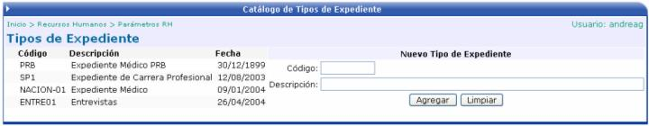
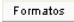
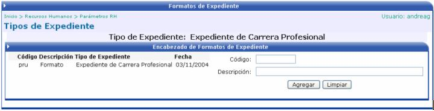
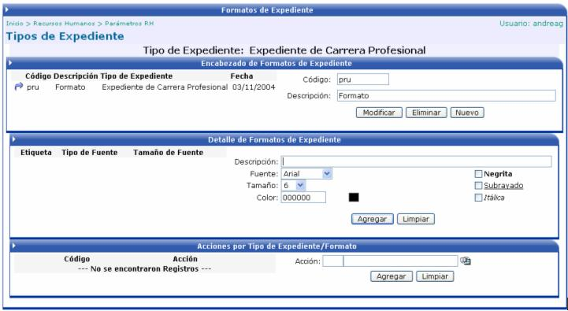
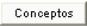
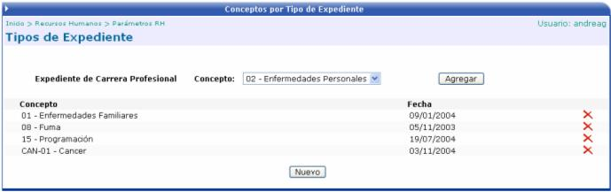
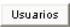
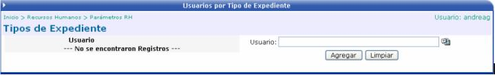

Permite definir diferentes formatos para los distintos tipos de expedientes que requiera la empresa.

También se le puede crear a cada tipo de expediente Formatos y Conceptos y además se le pueden asociar usuarios.

Se debe de crear el encabezado del formato, asignándole un código y una descripción.

Al hacer un click en el botón “Agregar”, se desplegará el detalle del formato:


En esta pantalla se asocian los conceptos a evaluar en el expediente, que con anterioridad se han creado en la opción “Conceptos por Tipo de Expediente”.


Este botón sirve para asociar usuarios a los diferentes tipos de expedientes. Esta asociación, es con el objetivo de autorizar a cierto grupo de usuarios a trabajar o a tener acceso al tipo de expediente al que esta ligado.
